Course Software#
VS Code#
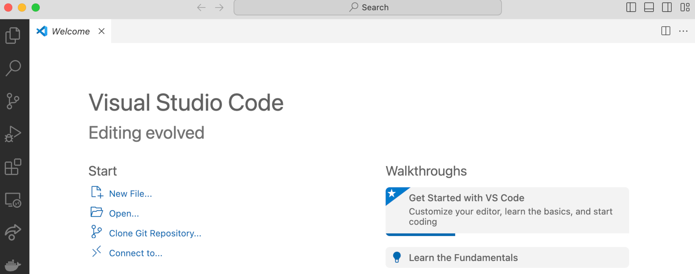
Fig. 4 A screenshot of the VS Code Interface.#
Installing VS Code#
Download VS Code from https://code.visualstudio.com/download and choose your OS (Windows, Mac, or Linux).

Fig. 5 A screenshot of the VS Code Installation page.#
Important
Make sure you are installing Visual Studio Code, NOT Visual Studio.
Installing the Python Extension#
The Python extension in VS Code is useful because it enhances code development with features like syntax highlight, smart code suggestions, integrated debugging, and linting to catch errors early. It also supports virtual environments and Jupyter Notebooks, making it a comprehensive tool for Python programming.
Open VS Code and go to the extensions tab on the left side of the screen.
Search for “Python”
Install the official Python extension published by Microsoft.
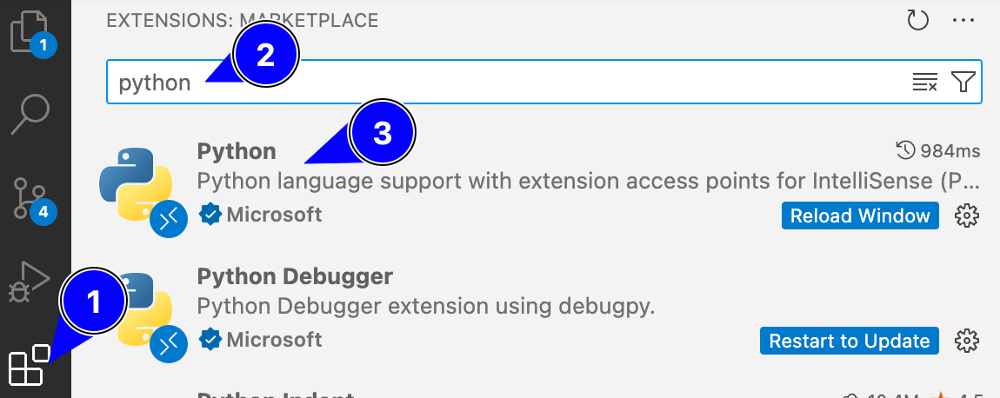
Fig. 6 A screenshot of highlighting the Python extension installation steps in VS Code.#
Note
Note that installing the Python extension does not install the Python interpreter itself. You will need to install Python separately as described in the Python.
Python#
Python is a widely used free and open-source general purpose programming language. It is known for its ease of use and extensive library support, making it a great choice for beginners and experts alike. Before you can start running Python code, you will need to install the Python interpreter on your system.
Installing Python (the modern way)#
Astral’s uv tool is used to manage modern Python environments. Follow the steps below to install uv and Python on your system. You can read more about uv at https://docs.astral.sh/uv/
From the VS Code menu bar, go to Terminal -> New Terminal to open a terminal window in VS Code. Then run the appropriate command(s) below in the terminal to install
uv.Install
uvfor Mac OS/Linux.curl -LsSf https://astral.sh/uv/install.sh | sh
Or, if that command doesn’t work, try the following:
wget -qO- https://astral.sh/uv/install.sh | sh
Install
uvfor Windows.powershell -ExecutionPolicy ByPass -c "irm https://astral.sh/uv/install.ps1 | iex"
After installation, set the execution policy for PowerShell scripts to RemoteSigned by running the following command in your PowerShell terminal. This allows you to run locally created scripts without signing them, while still requiring that scripts downloaded from the internet are signed by a trusted publisher.
Set-ExecutionPolicy -Scope CurrentUser -ExecutionPolicy RemoteSigned
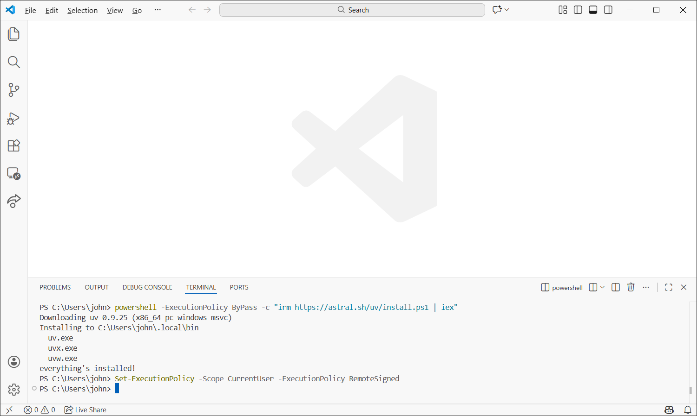
Fig. 12 A screenshot of VS Code with uv installation commands entered into the terminal.#
Close VS Code and open it again. Then, in the new terminal, run the following command to install Python.
uv python install 3.13
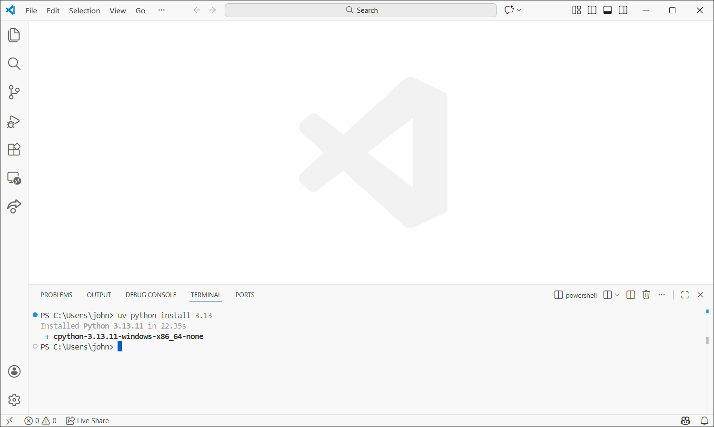
Fig. 13 A screenshot of VS Code with Python installation commands entered into the terminal.#
You can test that Python is installed correctly by running the following command
uv run python --version
You should see output similar to the following
Python 3.13.xx
In VS Code, open the folder for your ENGR 13300 course files by selecting File -> Open Folder… from the menu bar.
Note
Make sure you open a folder, and not just a single file inside that folder. This ensures that the virtual environment we are about to create will be stored inside this folder.
Virtual environments ensure that each of your projects has its own dependencies, preventing conflicts between different projects. In your VS Code terminal, run the following commands to initialize the folder as a uv project and set up a Python virtual environment within it. If you see a pop-up asking if you want to activate the new virtual environment, click “Yes”.
uv init uv sync
To verify that the virtual environment is set up correctly, close your current terminal and open a new one. This should automatically activate your new virtual environment. Then, run the following command to test that the correct version of Python is being used.
python --versionYou should see output similar to the following.
Python 3.13.xx
Note
Note that we no longer need to type
uv run pythonto use Python. The virtual environment we set up ensures that the correct Python version is used whenever we typepythonin this project folder.
Installing Python (the traditional way)#
Follow the steps below to install Python on your system.
Open the Microsoft store.
Search for “Python 3.13”.
Click on Get to install the Python 3.13 interpreter.
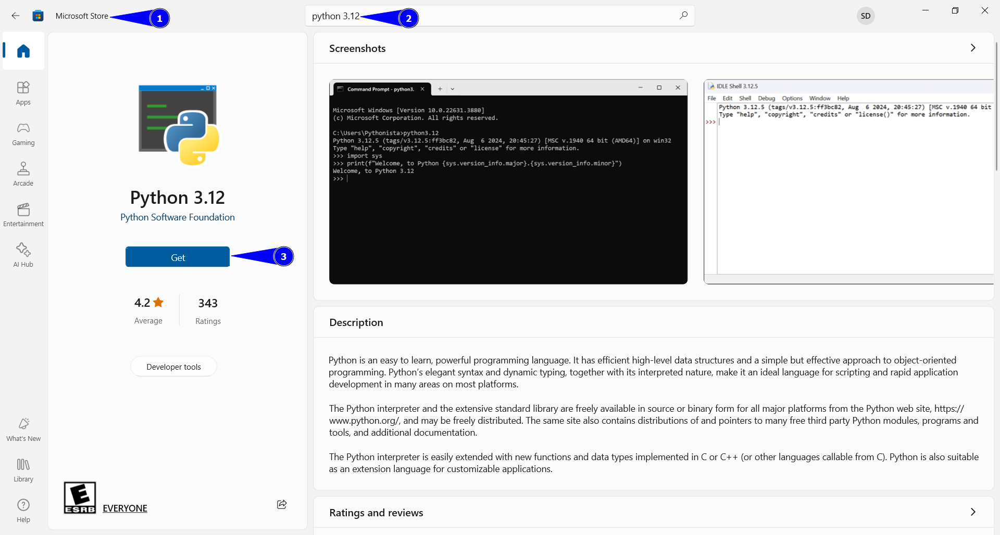
Fig. 14 A screenshot of the Python installation page in the Windows Store.#


MATLAB#
MATLAB is a proprietary high-level programming language and interactive environment bundled as a single application. It is commonly used in engineering, scientific research, and academia. Before you can start writing and running MATLAB programs, you will need to install it on your system. Follow the steps below to install MATLAB on your system.
Creating a MATLAB account#
Open https://www.mathworks.com/academia/tah-portal/purdue-university-31484706.html
Click on Sign in to get started
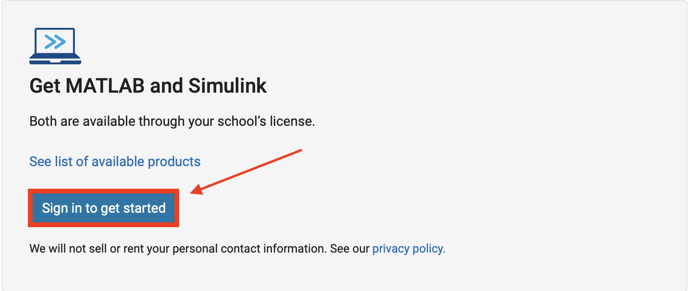
Fig. 18 A screenshot of the sign-in page for creating a Purdue University licensed MATLAB account.#
Create an account using your Purdue email. Make sure your password is different from the one you use to log in to mypurdue
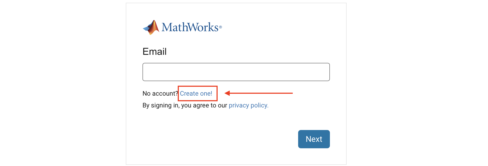
Fig. 19 A screenshot of the account creation page for a Purdue University licensed MATLAB account.#
Repeat 1 and 2. Then, sign in with your created account
Choose your option:
Click on Open MATLAB Online to run MATLAB without any installation.
Click on Install MATLAB to run MATLAB on your local device.
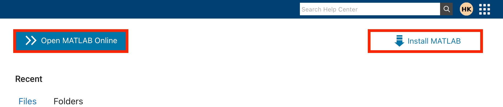
Fig. 20 A screenshot highlighting buttons to open MATLAB Online or install MATLAB.#
MATLAB Installation#
If you clicked on Install MATLAB in the previous step, you are ready to install.
Click on the down arrow button to download MATLAB for Linux. Make sure that you are downloading R2025b version
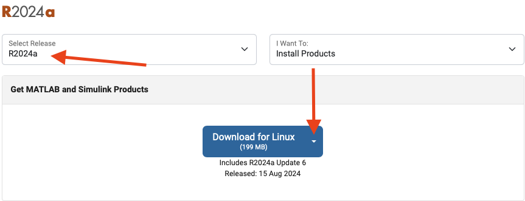
Fig. 21 A screenshot of the MATLAB installer download page on Linux.#
Follow the prompts to install MATLAB using your Purdue credentials. Use
all the default settings until you get to the Options step where you should check the box to create symbolic links, and uncheck the box to “Improve MATLAB by sending user experience information to MathWorks”.
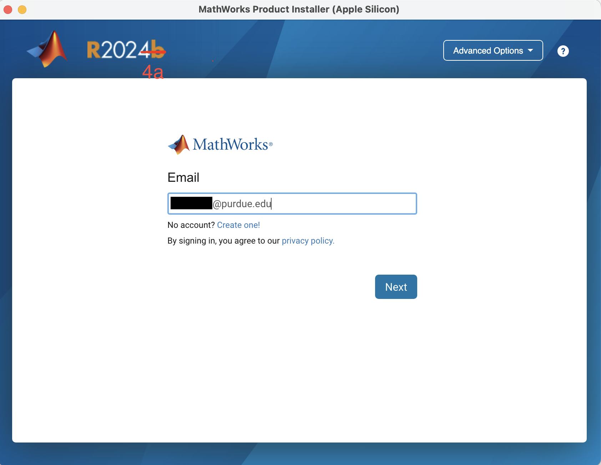
Fig. 22 A screenshot of the MATLAB installer wizard email entry page.#
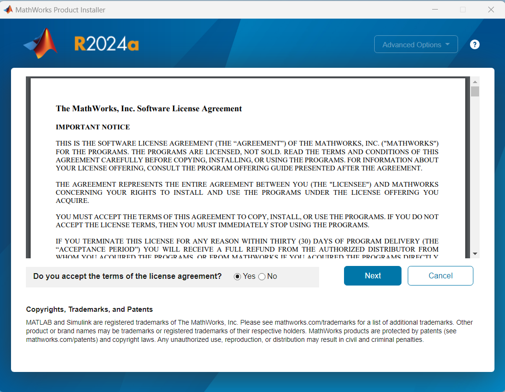
Fig. 23 A screenshot of the MATLAB installer wizard license agreement page.#
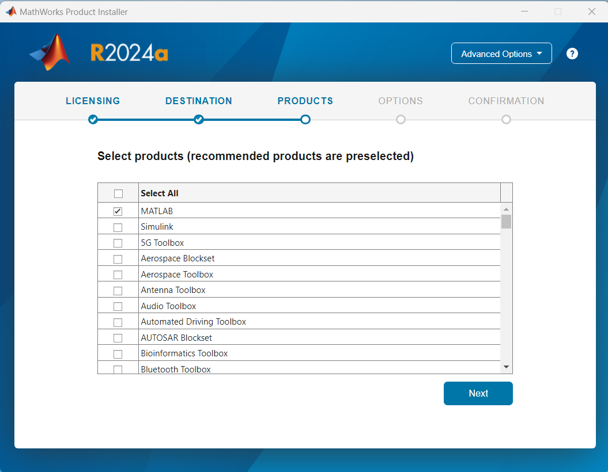
Fig. 24 A screenshot of the MATLAB installation wizard products page.#
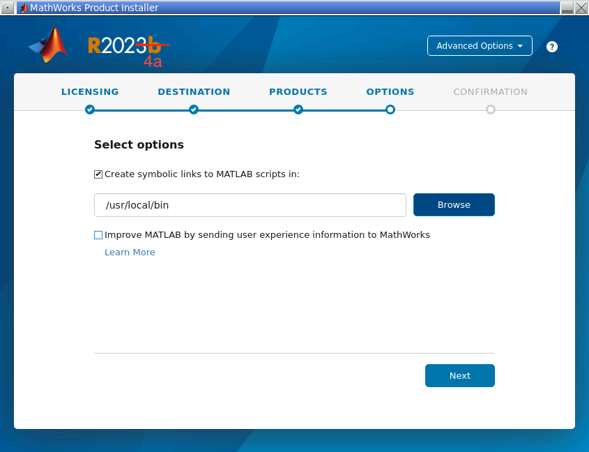
Fig. 25 A screenshot of the MATLAB installation wizard options page.#
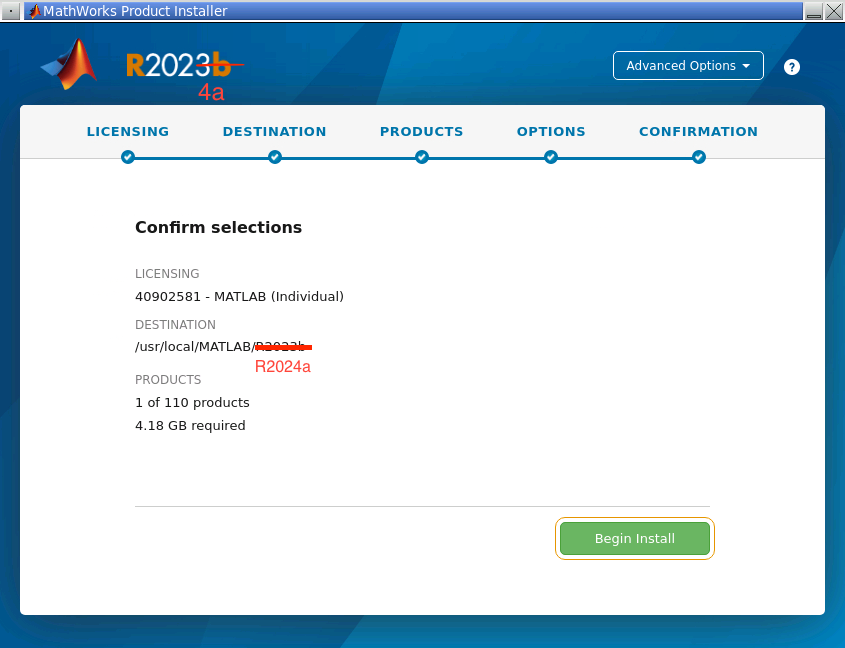
Fig. 26 A screenshot of the MATLAB installation wizard confirmation page.#
Click on the down arrow button to download MATLAB for Windows. Make sure that you are downloading R2025b version
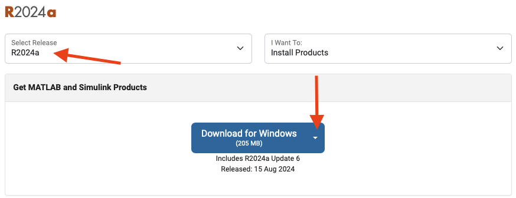
Fig. 27 A screenshot of MATLAB installer download page on Windows.#
Follow the prompts to install MATLAB using your Purdue credentials. Use all the default settings until you get to the Options step where you should check the box to create symbolic links, and uncheck the box to “Improve MATLAB by sending user experience information to MathWorks”.
Fig. 28 A screenshot of the MATLAB installer wizard email entry page.#
Fig. 29 A screenshot of the MATLAB installer wizard license agreement page.#
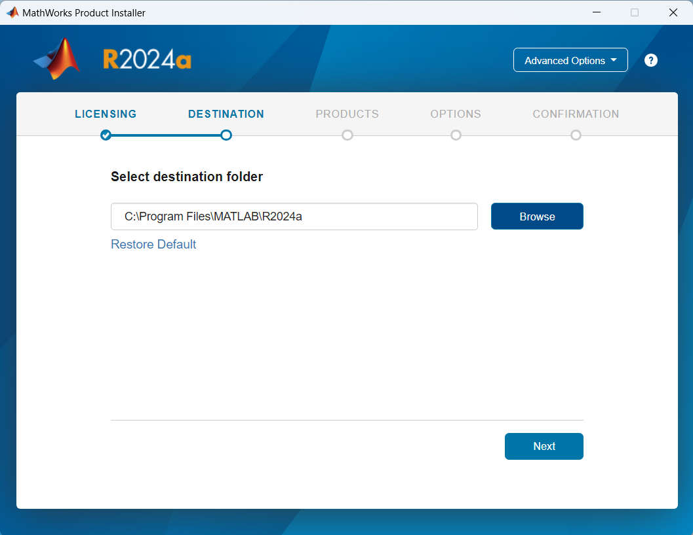
Fig. 30 A screenshot of the MATLAB installer wizard destination page.#
Fig. 31 A screenshot of the MATLAB installation wizard products page.#
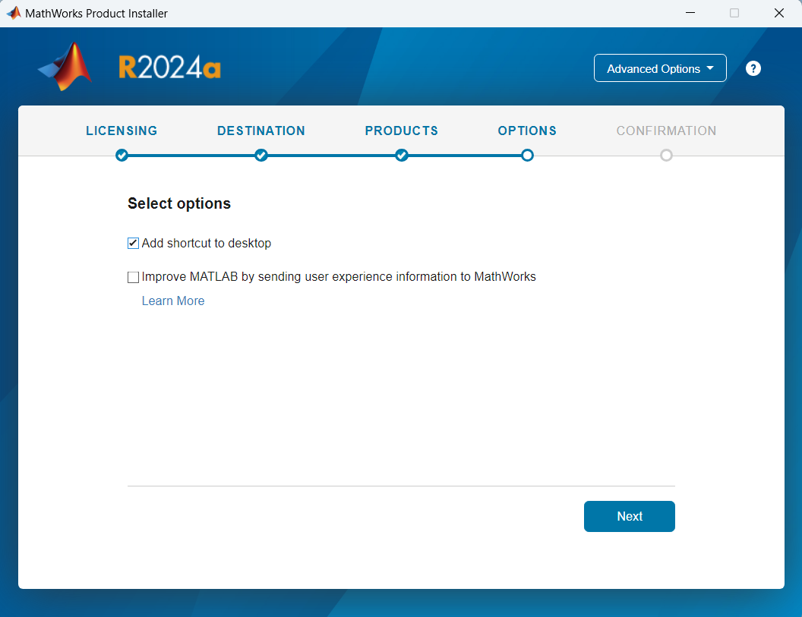
Fig. 32 A screenshot of the MATLAB installation wizard options page.#
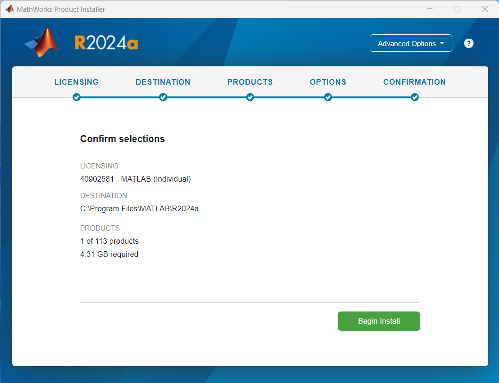
Fig. 33 A screenshot of the MATLAB installation wizard confirmation page.#
Click on the down arrow button to download MATLAB for Intel Chip. Make sure that you are downloading R2025b version
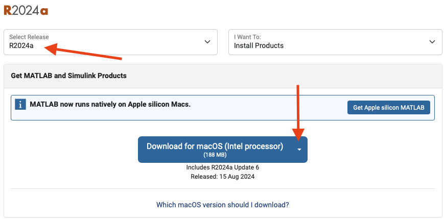
Fig. 34 A screenshot of the MATLAB installer wizard email entry page.#
Follow the prompts to install MATLAB using your Purdue credentials. Use all the default settings until you get to the Options step where you should check the box to create symbolic links, and uncheck the box to “Improve MATLAB by sending user experience information to MathWorks”.
Fig. 35 A representation of MATLAB Installation process on Mac Silicon.#
Fig. 36 A screenshot of the MATLAB installer wizard license agreement page.#
Fig. 37 A screenshot of the MATLAB installation wizard products page.#
Fig. 38 A screenshot of the MATLAB installation wizard options page.#
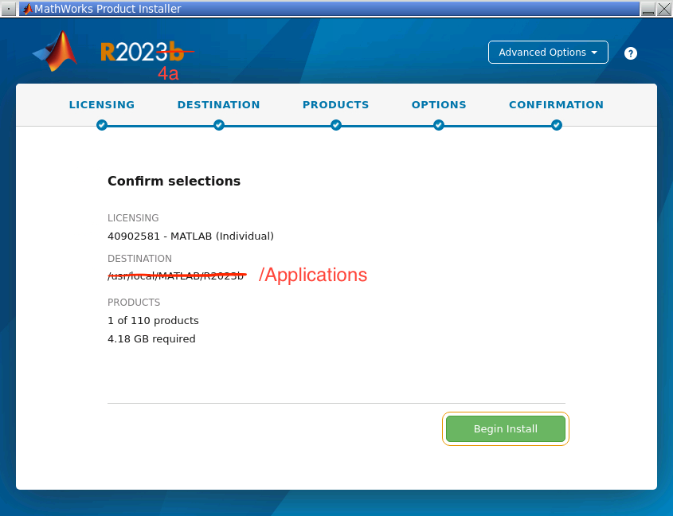
Fig. 39 A screenshot of the MATLAB installation wizard confirmation page.#
For Apple Silicon chips, two installations are required: Amazon Corretto 11 and MATLAB.
Change the current version to R2025b version. Click on Install Java Runtime and then click on Get Amazon Corretto 11.
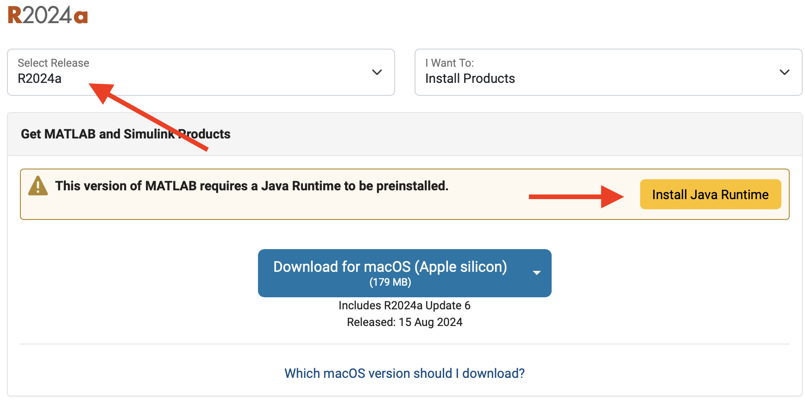
Fig. 40 A screenshot of the MATLAB installer download page with the Install Java Runtime button highlighted.#
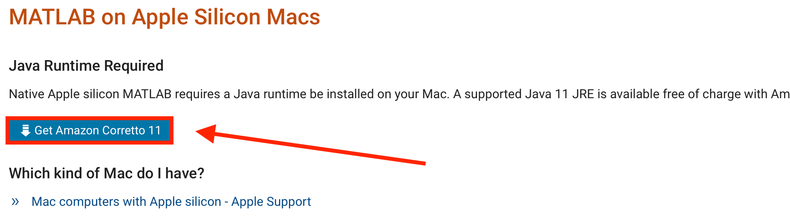
Fig. 41 A screenshot of the Amazon Corretto 11 installer download page with the Get Amazon Corretto 11 button highlighted.#
Install Amazon Corretto 11, using default settings
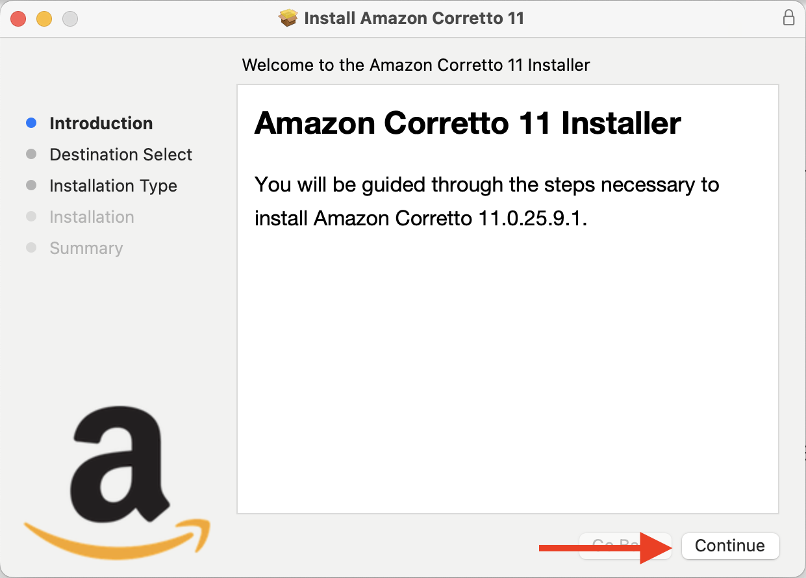
Fig. 42 A screenshot of the Amazon Corretto 11 installer.#
Go back to https://www.mathworks.com/downloads/
Change the current version to R2025b version. Click on the down arrow button to download MATLAB for Apple Silicon.
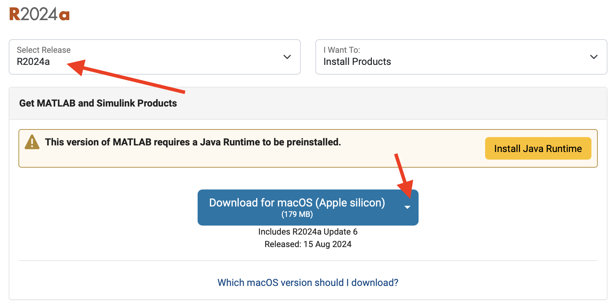
Fig. 43 A screenshot of the MATLAB installer download page with the Download for macOS(Apple silicon) button highlighted.#
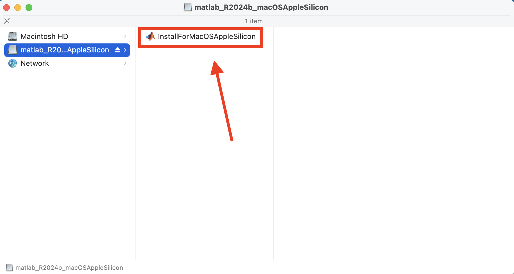
Fig. 44 A screenshot of finding the MATLAB Installation App on Mac Silicon.#
Follow the prompts to install MATLAB using your Purdue credentials. Use all the default settings until you get to the Options step where you should check the box to create symbolic links, and uncheck the box to “Improve MATLAB by sending user experience information to MathWorks”.
Fig. 45 A screenshot of the MATLAB installer wizard email entry page.#
Fig. 46 A screenshot of the MATLAB installer wizard license agreement page.#
Fig. 47 A screenshot of the MATLAB installer wizard products page.#
Fig. 48 A screenshot of the MATLAB installer wizard options page.#
Fig. 49 A screenshot of the MATLAB installer wizard confirmation page.#
GNU Octave#
Octave is a free computing platform compatible with MATLAB files, backed by the GNU Project. If you’re having trouble with the MATLAB install, or want to support open-source software, try Octave. You can learn more about the open-source philosophy here: https://www.gnu.org/philosophy/philosophy.html
Installing Octave#
To download Octave, visit https://octave.org/download and follow the instructions tailored for your operating system.
Once installed, you’ll have two core applications:
- Octave-cli
This is the command-line interface. It functions as a terminal window where you execute commands. You must use an external text editor, such as VS Code, to write and save your script and function files before loading and running them in the terminal.
- Octave-GUI
This is the Graphical User Interface, which provides a user-friendly environment similar to the MATLAB workspace. You can write, save, and execute your code directly within the application, making it easier for new users.
Using Octave Online#
A convenient, third-party web application is available at: https://octave-online.net/. While this online tool is slightly more limited in features compared to a local installation, it provides immediate access on any device with a browser and internet connection. It’s available for quick testing before you install the desktop version.